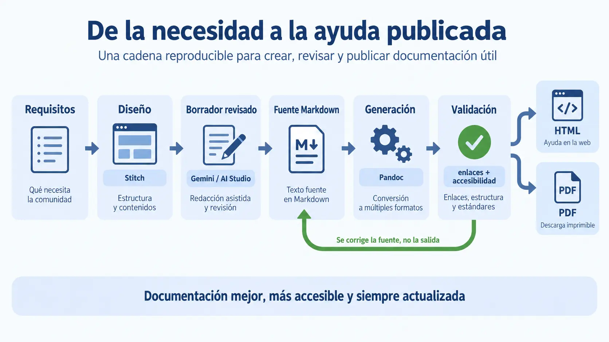

Contenido de la página
Objetivo docente
Identificar sistemas de ayuda y seleccionar un flujo reproducible de fuente, generación, validación y publicación.

Contenido para explicar
Se comparan un editor visual, un espacio de documentación web y un procesador documental. Stitch diseña; Gemini/AI Studio redacta y transforma; Markdown mantiene la fuente; la plataforma elegida ofrece acciones visibles para previsualizar, validar y publicar HTML o una versión imprimible. Todo el recorrido del alumnado se realiza desde la interfaz.
RA6-EJ02 · Ejemplo resuelto
El proyecto ofrece una acción Generar ayuda. Al activarla desde el panel del proyecto, la interfaz muestra tres etapas: «Leer fuentes», «Crear páginas» y «Comprobar enlaces». Cada etapa presenta estado, archivos afectados y un mensaje comprensible si falla.
| Herramienta | Entrada | Salida | Decisión |
|---|---|---|---|
| Stitch | requisitos | diseño | arquitectura visual |
| Gemini | versión y función | borrador | contenido a verificar |
| Plataforma documental | Markdown | HTML/PDF | publicación y descarga desde interfaz |
RA6-PB02 · Cadena reproducible
Enunciado para publicar
Genera una página de ayuda desde Markdown usando la acción visual del proyecto, modifica una frase en la fuente, vuelve a generar y demuestra en la previsualización que la salida cambia sin editarla manualmente. Documenta un fallo mostrado por la interfaz y su diagnóstico.
Solución orientativa
Mostrar ejemplo de solución
La entrega conserva fuente, salida, versión y registro visual de generación. Tras cambiar «Eliminar» por «Archivar», solo se edita Markdown y se vuelve a pulsar Generar ayuda. Un enlace .md se transforma en .html; el panel de validación impide publicar una ruta rota.
Cierre
Justifica por qué el HTML generado no debe convertirse en segunda fuente editable.
La herramienta concreta puede variar, pero debe permitir previsualizar, exportar y consultar errores desde una interfaz accesible.